# For data manipulation and tidying
library(dplyr)
library(lubridate)
library(tidyr)
# For mapping
library(ggmap)
library(mapproj)
# For data visualizations
library(ggplot2)
# For modeling and machine learning
library(caret)Partial Replication of Bicycle Sharing in Seattle
Abstract
This is a replication of select portions of Amber Thomas’s original post Bicycle Sharing in Seattle from November 10, 2016.
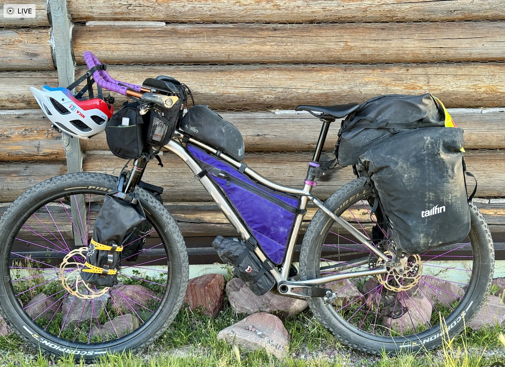
Introduction
This is an exploration of bicycle-sharing data in the city of Seattle, WA (USA) from October 2014 - April 2015 not the data Amber used that was October 2014 - August 2016. I hope to eventually combine this data with other forms of ride-sharing and transportation in the city, but this will be the first step.
Time to get started!
Loading Necessary Packages
Importing Data
All of the data can be downloaded from Kaggle. This project contains 3 data sets and each file is imported and inspected independently using the read.csv() function.
Warning
The data from Kaggle is not the same data that was originally analyzed by Amber. Specifically, the number of rows in the trip dataset downloaded from Kaggle is 50,793 compared to the 236,065 rows Amber analyzes. The Pronto web site for Seattle is no longer available.
station <- read.csv(file = "./data/station.csv",
header = TRUE,
stringsAsFactors = FALSE)
trip <- read.csv(file = "./data/trip.csv",
header = TRUE,
stringsAsFactors = FALSE)
weather <- read.csv(file = "./data/weather.csv",
header = TRUE,
stringsAsFactors = FALSE)Ok, let’s take a look at each of these data files.
Data Structures and Variables
station
Rows: 58
Columns: 9
$ station_id <chr> "BT-01", "BT-03", "BT-04", "BT-05", "CBD-03", "CBD-0…
$ name <chr> "3rd Ave & Broad St", "2nd Ave & Vine St", "6th Ave …
$ lat <dbl> 47.61842, 47.61583, 47.61609, 47.61311, 47.61073, 47…
$ long <dbl> -122.3510, -122.3486, -122.3411, -122.3442, -122.332…
$ install_date <chr> "10/13/2014", "10/13/2014", "10/13/2014", "10/13/201…
$ install_dockcount <int> 18, 16, 16, 14, 20, 18, 20, 20, 20, 18, 16, 16, 18, …
$ modification_date <chr> "", "", "", "", "", "", "", "11/9/2015", "", "", "8/…
$ current_dockcount <int> 18, 16, 16, 14, 20, 18, 20, 18, 20, 18, 0, 16, 20, 1…
$ decommission_date <chr> "", "", "", "", "", "", "", "", "", "", "8/9/2016", …There are 9 variables in the data station data frame:
station_id: The individual ID number for a bike stationname: The name of that station ID, also appears to be the rough location of the stationlat: The latitude of the stationlong: The longitude of the stationinstall_date: Date that station was placed in service (MM/DD/YYYY format)install_dockcount: Number of docks (bike positions) at each station on the installation datemodification_date: Date that station was modified, resulting in a change in location or dock count (MM/DD/YYYY format)current_dockcount: Number of docks at each station on 8/31/2016decommission_date: Date that station was placed out of service (MM/DD/YYYY format)
trip
Rows: 50,793
Columns: 12
$ trip_id <int> 431, 432, 433, 434, 435, 436, 437, 438, 439, 440, 44…
$ starttime <chr> "10/13/2014 10:31", "10/13/2014 10:32", "10/13/2014 …
$ stoptime <chr> "10/13/2014 10:48", "10/13/2014 10:48", "10/13/2014 …
$ bikeid <chr> "SEA00298", "SEA00195", "SEA00486", "SEA00333", "SEA…
$ tripduration <dbl> 985.935, 926.375, 883.831, 865.937, 923.923, 808.805…
$ from_station_name <chr> "2nd Ave & Spring St", "2nd Ave & Spring St", "2nd A…
$ to_station_name <chr> "Occidental Park / Occidental Ave S & S Washington S…
$ from_station_id <chr> "CBD-06", "CBD-06", "CBD-06", "CBD-06", "CBD-06", "C…
$ to_station_id <chr> "PS-04", "PS-04", "PS-04", "PS-04", "PS-04", "PS-04"…
$ usertype <chr> "Member", "Member", "Member", "Member", "Member", "M…
$ gender <chr> "Male", "Male", "Female", "Female", "Male", "Male", …
$ birthyear <int> 1960, 1970, 1988, 1977, 1971, 1974, 1978, 1983, 1974…There are 12 variables in the trip data frame.
trip_id: An identification number assigned to each trip (from one bike station to another)starttime: The time and date that a bike was borrowed from a station (in MM/DD/YYYY HH:MM format)stoptime: The time and date that a bike was returned to a station (in MM/DD/YYYY HH:MM format)bikeid: The identification number for a specific biketripduration: Time of trip (measured in seconds)from_station_name: The name of the station where the bike was borrowed fromto_station_name: The name of the station where the bike was returned tofrom_station_id: The ID number of the station where the bike was borrowed fromto_station_id: The ID number of the station where the bike was returned tousertype: Indicates whether the user was a Member’’ (i.e., someone with a monthly or annual membership to Pronto!) or aShort-Term Pass Holder’’ (i.e., someone who purchased a 24 hour or 3 day pass)gender: The gender of the rider (if known)birthyear: The year that the rider was born
weather
Rows: 689
Columns: 21
$ Date <chr> "10/13/2014", "10/14/2014", "10/15/2014", "…
$ Max_Temperature_F <int> 71, 63, 62, 71, 64, 68, 73, 66, 64, 60, 62,…
$ Mean_Temperature_F <int> 62, 59, 58, 61, 60, 64, 64, 60, 58, 58, 55,…
$ Min_TemperatureF <int> 54, 55, 54, 52, 57, 59, 55, 55, 55, 57, 50,…
$ Max_Dew_Point_F <int> 55, 52, 53, 49, 55, 59, 57, 57, 52, 55, 49,…
$ MeanDew_Point_F <int> 51, 51, 50, 46, 51, 57, 55, 54, 49, 53, 47,…
$ Min_Dewpoint_F <int> 46, 50, 46, 42, 41, 55, 53, 50, 46, 48, 44,…
$ Max_Humidity <int> 87, 88, 87, 83, 87, 90, 94, 90, 87, 88, 86,…
$ Mean_Humidity <int> 68, 78, 77, 61, 72, 83, 74, 78, 70, 81, 76,…
$ Min_Humidity <int> 46, 63, 67, 36, 46, 68, 52, 67, 58, 67, 62,…
$ Max_Sea_Level_Pressure_In <dbl> 30.03, 29.84, 29.98, 30.03, 29.83, 29.96, 2…
$ Mean_Sea_Level_Pressure_In <dbl> 29.79, 29.75, 29.71, 29.95, 29.78, 29.90, 2…
$ Min_Sea_Level_Pressure_In <dbl> 29.65, 29.54, 29.51, 29.81, 29.73, 29.80, 2…
$ Max_Visibility_Miles <int> 10, 10, 10, 10, 10, 10, 10, 10, 10, 10, 10,…
$ Mean_Visibility_Miles <int> 10, 9, 9, 10, 10, 8, 10, 10, 10, 6, 10, 10,…
$ Min_Visibility_Miles <int> 4, 3, 3, 10, 6, 2, 6, 5, 6, 2, 10, 8, 6, 10…
$ Max_Wind_Speed_MPH <int> 13, 10, 18, 9, 8, 10, 10, 12, 15, 14, 15, 8…
$ Mean_Wind_Speed_MPH <int> 4, 5, 7, 4, 3, 4, 3, 5, 8, 8, 9, 4, 6, 12, …
$ Max_Gust_Speed_MPH <chr> "21", "17", "25", "-", "-", "-", "18", "-",…
$ Precipitation_In <dbl> 0.00, 0.11, 0.45, 0.00, 0.14, 0.31, 0.00, 0…
$ Events <chr> "Rain", "Rain", "Rain", "Rain", "Rain", "Ra…There are 21 variables in the weather data frame:
Date: The date in MM/DD/YYYY formatMax_Temperature_F: The maximum temperature that day (in degrees F)Mean_Temperature_F: The average temperature that day (in degrees F)Min_TemperatureF: The minimum temperature that day (in degrees F)Max_Dew_Point_F: The maximum dew point (in degrees F)MeanDew_Point_F: The average dew point (in degrees F)Min_Dewpoint_F: The minimum dew point (in degrees F)Max_Humidity: The maximum humidity (in %)Mean_Humidity: The average humidity (in %)Min_Humidity: The minimum humidity (in %)Maximum_Sea_Level_Pressure_In: The maximum atmospheric pressure at sea level (in inches of mercury)Mean_Sea_Level_Pressure_In: The average atmospheric pressure at sea level (in inches of mercury)Min_Sea_Level_Pressure_In: The minimum atmospheric pressure at sea level (in inches of mercury)Max_Visibility_Miles: The maximum visibility (in miles)Mean_Visibility_Miles: The average visibility (in miles)Min_Visibility_Miles: The minimum visibility (in miles)Max_Wind_Speed_MPH: The maximum sustained wind speed (in miles per hour)Mean_Wind_Speed_MPH: The average sustained wind speed (in miles per hour)Max_Gust_Speed_MPH: The maximum gust wind speed (in miles per hour)Precipitation_In: The amount of precipitation (measured in inches)Events: Weather events that occurred that day (e.g., rain, fog, snow, thunderstorm etc.)
Data Visualization
Exploring the station Dataset
Since the station dataset was the first one imported, let’s start with a little exploration there. First of all, how many unique stations are we dealing with?
S1 <- station |>
summarize(nds = n_distinct(station_id))
S1 nds
1 58There are 58 different stations. ?@fig-map1 shows where the stations are located.
station |>
group_by(station_id) |>
head()# A tibble: 6 × 9
# Groups: station_id [6]
station_id name lat long install_date install_dockcount modification_date
<chr> <chr> <dbl> <dbl> <chr> <int> <chr>
1 BT-01 3rd A… 47.6 -122. 10/13/2014 18 ""
2 BT-03 2nd A… 47.6 -122. 10/13/2014 16 ""
3 BT-04 6th A… 47.6 -122. 10/13/2014 16 ""
4 BT-05 2nd A… 47.6 -122. 10/13/2014 14 ""
5 CBD-03 7th A… 47.6 -122. 10/13/2014 20 ""
6 CBD-04 Union… 47.6 -122. 7/27/2015 18 ""
# ℹ 2 more variables: current_dockcount <int>, decommission_date <chr>station_locs <- station |>
group_by(station_id) |>
select(station_id, lat, long)
station_locs# A tibble: 58 × 3
# Groups: station_id [58]
station_id lat long
<chr> <dbl> <dbl>
1 BT-01 47.6 -122.
2 BT-03 47.6 -122.
3 BT-04 47.6 -122.
4 BT-05 47.6 -122.
5 CBD-03 47.6 -122.
6 CBD-04 47.6 -122.
7 CBD-05 47.6 -122.
8 CBD-06 47.6 -122.
9 CBD-07 47.6 -122.
10 CBD-13 47.6 -122.
# ℹ 48 more rows```{r}
#| label: fig-map1
#| fig-cap: "Seattle bike station locations"
# Load the correct map
# mymap <- get_map(location = "Seattle", maptype = "roadmap", zoom = 12)
# Plot a single point for each Station ID
# ggmap(mymap) + geom_point(aes(x = long, y = lat), data = station_locs,
# alpha = 0.7, color = "darkred", size = 2)
```So it looks like all of the stations are located near the Lower Queen Anne, Belltown, International District, Capitol Hill and University of Washington areas. ?@fig-mymap2 provides a more zoomed-in view of the bike station locations.
```{r}
#| label: fig-mymap2
#| fig-cap: "Zoomed in view of Seattle bike station locations"
# mymap2 <- get_map(location = c(lon = -122.32, lat = 47.63),
# maptype = "roadmap", zoom = 13)
# Plot a single point for each Station ID
# ggmap(mymap2) + geom_point(
# aes(x = long, y = lat),
# data = station_locs,
# alpha = 0.5,
# color = "red",
# size = 2
# )
```The bike locations appear clustered in ?@fig-mymap2. It would be interesting to know the order the stations were added.
Station Installations
First, let’s convert those character-string date objects to actual dates using the lubridate package.
station$install_date <- mdy(station$install_date)
# How many times were new stations installed?
station |>
summarise(n_distinct(install_date)) n_distinct(install_date)
1 9# How many stations were installed on each date?
station |>
group_by(install_date) |>
summarise(count = n()) |>
arrange(install_date)# A tibble: 9 × 2
install_date count
<date> <int>
1 2014-10-13 50
2 2015-05-22 1
3 2015-06-12 1
4 2015-07-27 1
5 2015-09-15 1
6 2015-10-29 1
7 2016-03-18 1
8 2016-07-03 1
9 2016-08-09 1The majority (86.21%) of the stations were added on opening day. ?@fig-mymap3 shows the location of the original bike stations and ?@fig-mymap4 shows the location and date additional bike stations were added.
```{r}
#| label: fig-mymap3
#| fig-cap: "Original bike stations"
# Plot a single point for each Station ID originally installed 2014-10-13
# ggmap(mymap2) +
# geom_point(
# aes(x = long, y = lat),
# data = subset(station, install_date == "2014-10-13"),
# alpha = 0.5,
# color = "red",
# size = 2
# )
``````{r}
#| label: fig-mymap4
#| fig-cap: "Subsequently added bike stations"
# ggmap(mymap2) +
# geom_point(
# aes(
# x = long,
# y = lat,
# color = factor(install_date)
# ),
# data = subset(station, install_date != "2014-10-13"),
# size = 3
# ) +
# theme(
# legend.position = c(0.95, 0.05),
# legend.justification = c(0.95, 0.05)
# ) +
# labs(color = "Install Date")
```So they added more stations throughout the district that they serve, instead of adding several new stations to a single neighborhood all at once. Good to know.
The number of bikes parked at each station (as of August 31, 2016) is shown in Figure 1.
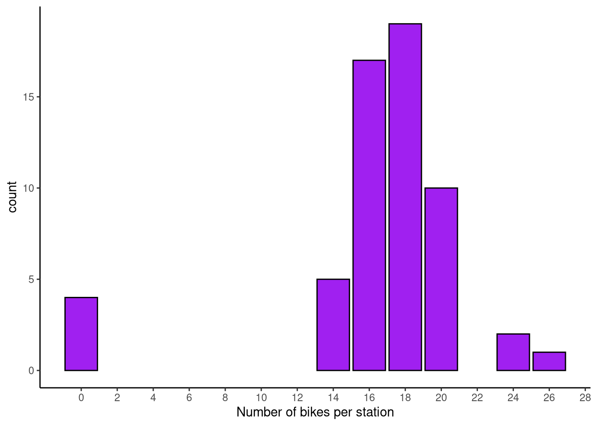
Well that’s weird, some of the stations have a dock count of 0. I’m assuming they didn’t start that way. Let’s calculate the change in dock count from station installation to August 31, 2016 and plot it in ?@fig-change.
dock_change <- station |>
group_by(station_id) |>
select(station_id, long, lat, ends_with("dockcount")) |>
mutate(dock_change = current_dockcount - install_dockcount)11 stations lost bike docks, 39 stayed the same, and 8 stations gained docks.
xtabs(~ dock_change, data = dock_change)dock_change
-20 -16 -6 -4 -2 0 2 4 6 8
1 3 2 1 4 39 4 2 1 1 Current Station Size
?@fig-size examines the current size of each station.
So it looks like the biggest stations tend to be on the outskirts of the rest. Where there are several stations in close proximity, there tend to be fewer bike docks at each station. That makes sense, logically speaking. If you go to a station and there is no bike to rent, you can easily go to another nearby, assuming there is another nearby. In areas where the stations are more secluded, it’s more important that there be bikes and open spaces readily available for users.
Alright, I’m feeling good about exploring this dataset. Time to check out the trip dataset!
Exploring the trip dataframe
A glimpse of the trip data frame is provided below.
Rows: 50,793
Columns: 12
$ trip_id <int> 431, 432, 433, 434, 435, 436, 437, 438, 439, 440, 44…
$ starttime <chr> "10/13/2014 10:31", "10/13/2014 10:32", "10/13/2014 …
$ stoptime <chr> "10/13/2014 10:48", "10/13/2014 10:48", "10/13/2014 …
$ bikeid <chr> "SEA00298", "SEA00195", "SEA00486", "SEA00333", "SEA…
$ tripduration <dbl> 985.935, 926.375, 883.831, 865.937, 923.923, 808.805…
$ from_station_name <chr> "2nd Ave & Spring St", "2nd Ave & Spring St", "2nd A…
$ to_station_name <chr> "Occidental Park / Occidental Ave S & S Washington S…
$ from_station_id <chr> "CBD-06", "CBD-06", "CBD-06", "CBD-06", "CBD-06", "C…
$ to_station_id <chr> "PS-04", "PS-04", "PS-04", "PS-04", "PS-04", "PS-04"…
$ usertype <chr> "Member", "Member", "Member", "Member", "Member", "M…
$ gender <chr> "Male", "Male", "Female", "Female", "Male", "Male", …
$ birthyear <int> 1960, 1970, 1988, 1977, 1971, 1974, 1978, 1983, 1974…Great, so there are quite a few things that we can potentially look at using this dataset by itself. Let’s start with the number of trips per day since Pronto! began opening bike stations. To do that, we need to recode our start date/times as POSIXct objects. We’ll use the lubridate package for this.
# Make the start and stop dates into POSIXct objects
trip_2 <- trip |>
mutate(start_dt = mdy_hm(starttime),
stop_dt = mdy_hm(stoptime))
# Recode the dates
trip_2 <- trip_2 |>
mutate(start_date = paste(month(start_dt),
day(start_dt), year(start_dt), sep = "/"))
trip_2$start_date <- mdy(trip_2$start_date)
trip_2 <- trip_2 |>
mutate(stop_date = paste(month(stop_dt),
day(stop_dt), year(stop_dt), sep = "/"))
trip_2$stop_date <- mdy(trip_2$stop_date)Great! The number of rides per day is shown in Figure 2.
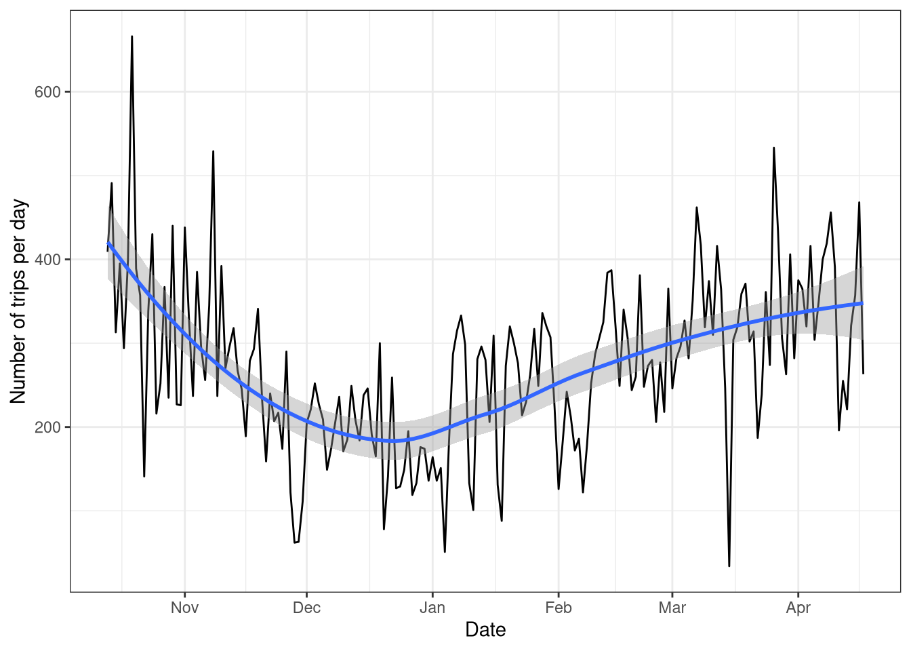
Plotting Trips Per Month (By Season)
First, we create a “Year-Month” variable as well as a “Season” variable.
start_date_ym <- trip_2 |>
mutate(
ym = paste(year(start_date),
month(start_date),
sep = "/"),
Season = case_when(
ym %in% c("2014/10", "2014/11") ~ "Fall",
ym %in% c("2014/12", "2015/1", "2015/2") ~ "Winter",
ym %in% c("2015/3", "2015/4", "2015/5") ~ "Spring"
)
)Now plot. I think I’ll plot this by month but color it by season (where December, January, and February are “Winter”, March, April, and May are “Spring”, and October, and November are “Fall”).
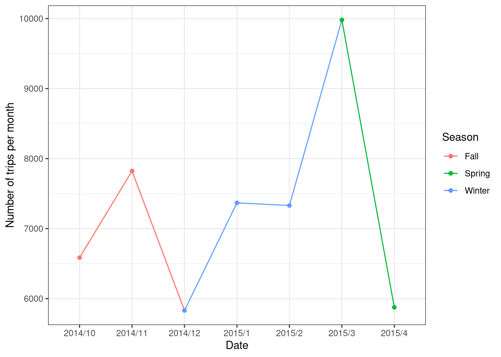
Well the kaggle data is quite different from the data used by Amber!
Average Trip Duration
Great! I wonder how the average trip duration fluctuates over this time period.
# Convert Trip Duration from Seconds to Minutes
Trip_Duration_Month <- start_date_ym |>
mutate(trip_duration_min = tripduration / 60) |>
group_by(ym) |>
select(ym, trip_duration_min, Season) |>
summarize(Avg = mean(trip_duration_min),
sd = sd(trip_duration_min)) |>
mutate(
se = sd / sqrt(n()),
Season = case_when(
ym %in% c("2014/10", "2014/11") ~ "Fall",
ym %in% c("2014/12", "2015/1", "2015/2") ~ "Winter",
ym %in% c("2015/3", "2015/4", "2015/5") ~ "Spring"
)
)Now to plot the average trip duration (in minutes) (\(\pm SE\))), with colors indicating seasons.
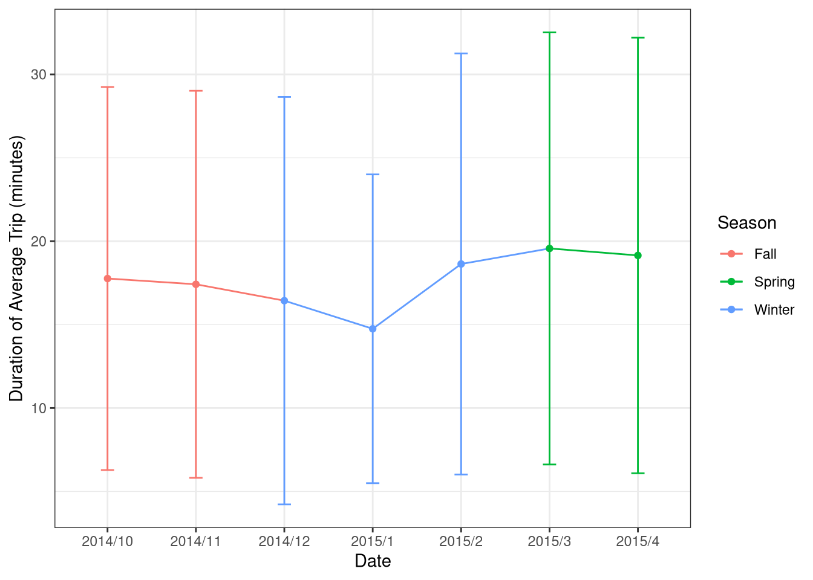
Number of Trips by Day of Week
I wonder if people are using this service to commute to/from work. Let’s look at the number of trips by day of the week.
First, let’s create a Day of the Week variable.
start_date_ym$wd <- wday(start_date_ym$start_date, label = TRUE)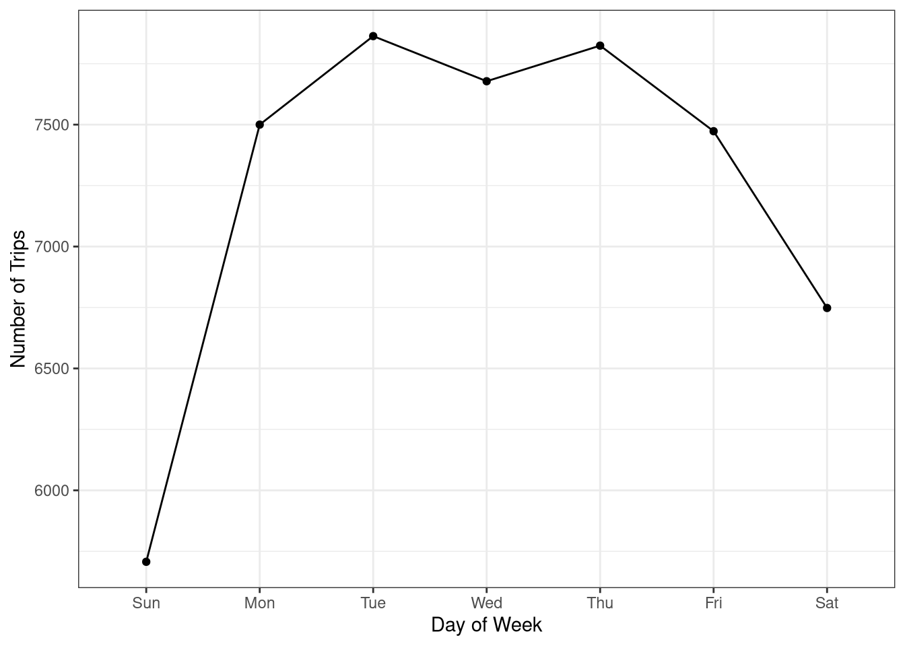
Ok, so there are definitely more trips during the week than on the weekends. I wonder if this varies by season too.
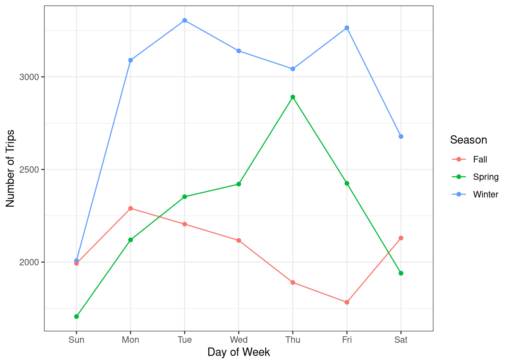
So it looks like usage is some what consistent across Winter and Spring, at least as far as the number of trips are concerned.
Number of Trips by Time of Day
How about time of day? Are people using the bikes around commuting times during the week and later in the day on weekends?
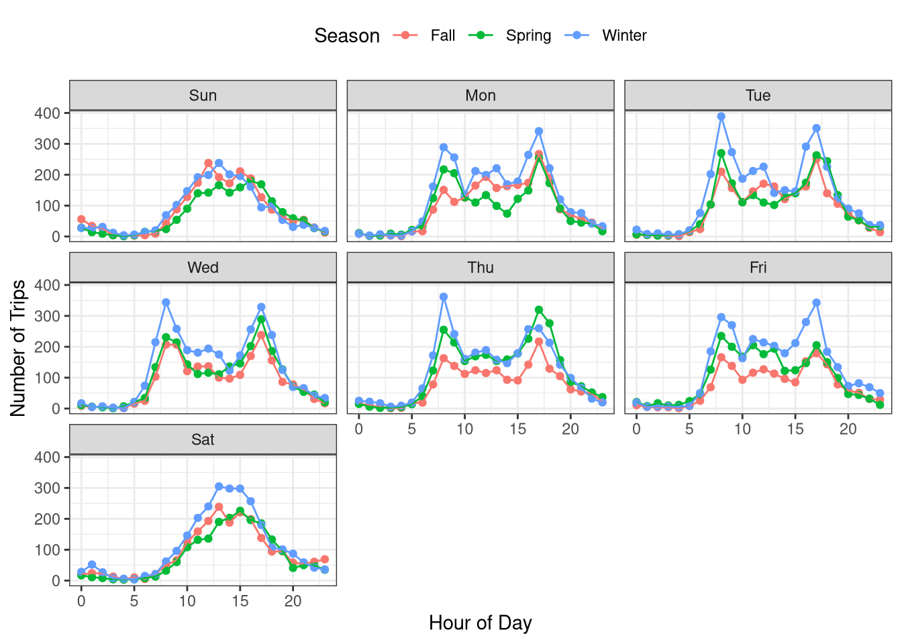
Wow, looks like regardless of the season, people are commuting to/from work using this service (there’s a spike between 8 and 10 AM and another between 4 and 7 PM Monday through Friday). But the weekends seem to be popular between 10 AM and 6 PM.
Number of Trips by Member Type
I wonder if different types of members (those who have a membership vs. those that bought a 24 hour or 3 day pass) vary in the number of trips they take.
If I were to guess, I’d think the short-term passes would be ideal for tourists or people looking for a quick weekend trip, whereas members may be more likely to continue using the service year-round. Let’s check out my assumptions by plotting, once again colored by season.
TODO: workout compilation error in creation of tripsPer_Month_UT.
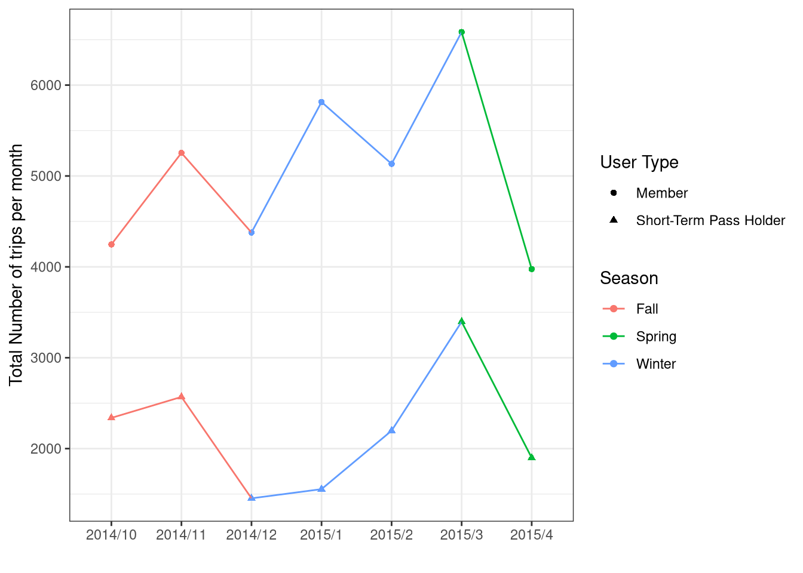
Different types of users (Member, Short-Term Pass Holder) seem to follow similar patterns of usage.
Trip Duration by Member Type
While it may seem that the trip duration shouldn’t vary widely by member type, a historical understanding of Pronto!’s pricing structure may make you reconsider that assumption. You see, while you have to purchase either an annual membership ($85/year), a 24-Hour Pass ($8) or a 3-Day Pass ($16) there is still a cap on the duration of your trip. For members, any ride under 45 minutes is free, but any ride going over 45 minutes will incur a fee of $2 for every additional 30 minutes. For short-term users, any ride under 30 minutes is free, but going over that time limit would cost you an additional $2 for the first 30 minutes and $5 for each additional 30 minutes after that!
Let’s see if these time limits cause differing behaviors in our users.
start_date_ym |>
filter(usertype != "") |>
group_by(usertype) |>
summarize(Trips = n()) |>
knitr::kable() | usertype | Trips |
|---|---|
| Member | 35386 |
| Short-Term Pass Holder | 15406 |
start_date_ym <- start_date_ym |>
filter(usertype != "") |>
mutate(tripduration_min = tripduration/60)TODO: Change theme to match, but I have the raw graph done.
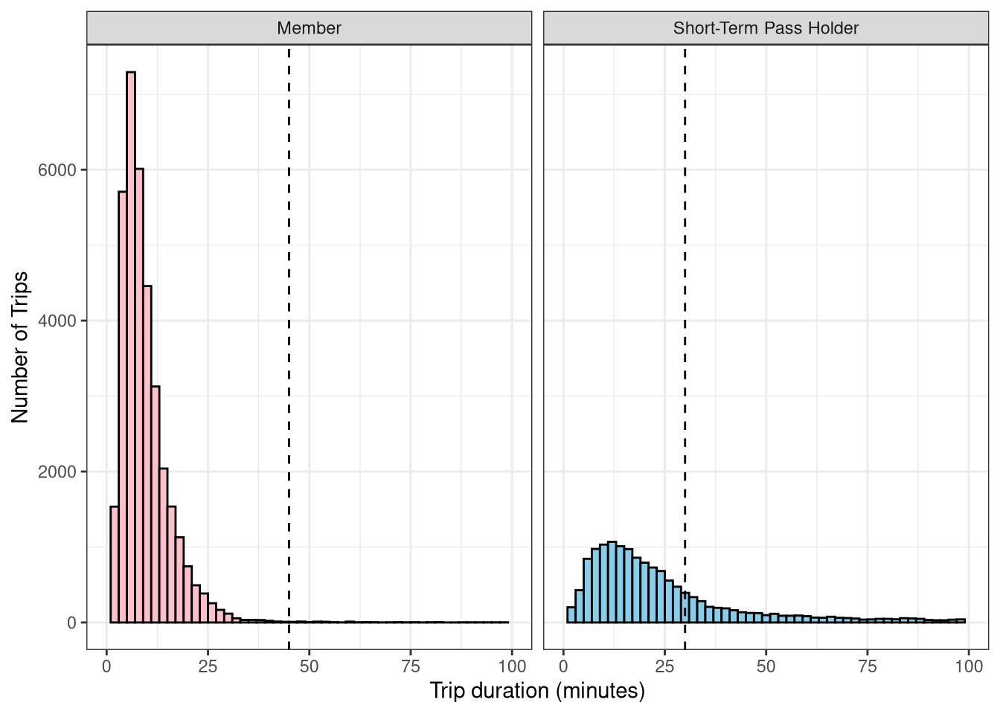
Ok, so our members are pretty good about making sure that they return their bike before they incur extra charges, but the short-term pass holders frequently go over their time limit. I wonder how the cost of a trip varies for members and pass holders. Let’s try to calculate the cost of a trip.
Need to compute cost properly!
start_date_ym <- start_date_ym |>
mutate(cost = ifelse(usertype == "Member" & tripduration_min <= 45, 0,
ifelse(usertype == "Member" & tripduration_min > 45 & tripduration_min <= 75, 2,
ifelse(usertype == "Member" & tripduration_min > 75, (2 + 2 * ceiling((tripduration_min - 75) / 30)),
ifelse(usertype == "Short-Term Pass Holder" & tripduration_min <= 30, 0,
ifelse(usertype == "Short-Term Pass Holder" & tripduration_min > 30 & tripduration_min < 60, 2,
ifelse(usertype == "Short-Term Pass Holder" & tripduration_min > 60, (2 + 5 * ceiling((tripduration_min - 60) / 30)), NA
)
)
)
)
)
))That was a complicated nested if/else statement! Let’s see how much these folks are paying in additional fees!
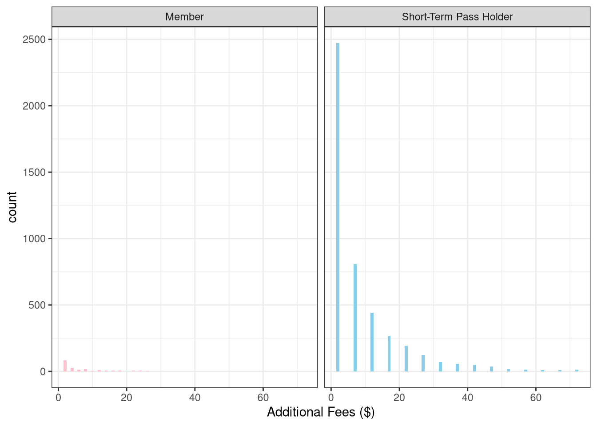
Looks like short-term pass holders (who are already paying a higher price per day of biking), are also paying lots of extra fees. This could be because they are unfamiliar with the pricing structure and don’t realize they need to return their bike to a station within 30 minutes without getting charged. It is also possible that short-term users may be tourists who don’t know their way around as easily, and thus can’t find their way to a station within the time limit.
Member Demographics
We only seem to have age and gender information about people who have an annual Pronto! membership, so we can at least take a look at what types of people use this service.
Let’s look first at age.
start_date_ym <- start_date_ym |>
mutate(age = year(start_dt) - birthyear)
start_date_ym |>
summarize(q25 = quantile(age, .25, na.rm = TRUE), q75 = quantile(age, .75, na.rm = TRUE)) q25 q75
1 28 41ggplot(data = start_date_ym, aes(x = age)) +
geom_histogram(
fill = "lightblue",
color = "black",
binwidth = 2
) +
theme_bw() +
labs(x = "Age in years")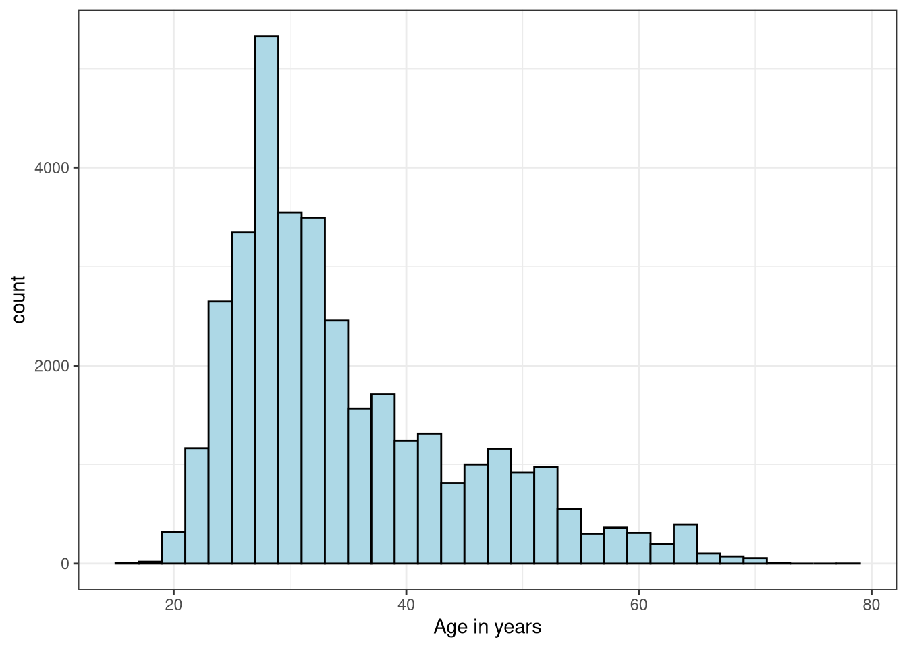
My first instinct here is to say “Wow! There’s a lot of 30-somethings that use this service!” But this figure (and these data) may be a little misleading. You see, we don’t have any sort of Rider ID number, meaning we can’t take “individual activity level” into account. So we can’t tell if the tallest spike is because 6 very athletic 28-year-olds went on 1,000 trips each, or if 100 people went on 60 trips each, or if there were 6,000 28-year-olds who each only used the service once.
The same problem would arise if we looked at gender, so I’m just going to move beyond demographics.
Skip the Trip Routes
Exploring the Weather Dataset
Now that I’ve visualized all that I can think of in terms of the “trips”” dataset, it’s time to take a brief look at the weather dataset.
Let’s get a quick reminder of what we’re looking at here.
Rows: 689
Columns: 21
$ Date <chr> "10/13/2014", "10/14/2014", "10/15/2014", "…
$ Max_Temperature_F <int> 71, 63, 62, 71, 64, 68, 73, 66, 64, 60, 62,…
$ Mean_Temperature_F <int> 62, 59, 58, 61, 60, 64, 64, 60, 58, 58, 55,…
$ Min_TemperatureF <int> 54, 55, 54, 52, 57, 59, 55, 55, 55, 57, 50,…
$ Max_Dew_Point_F <int> 55, 52, 53, 49, 55, 59, 57, 57, 52, 55, 49,…
$ MeanDew_Point_F <int> 51, 51, 50, 46, 51, 57, 55, 54, 49, 53, 47,…
$ Min_Dewpoint_F <int> 46, 50, 46, 42, 41, 55, 53, 50, 46, 48, 44,…
$ Max_Humidity <int> 87, 88, 87, 83, 87, 90, 94, 90, 87, 88, 86,…
$ Mean_Humidity <int> 68, 78, 77, 61, 72, 83, 74, 78, 70, 81, 76,…
$ Min_Humidity <int> 46, 63, 67, 36, 46, 68, 52, 67, 58, 67, 62,…
$ Max_Sea_Level_Pressure_In <dbl> 30.03, 29.84, 29.98, 30.03, 29.83, 29.96, 2…
$ Mean_Sea_Level_Pressure_In <dbl> 29.79, 29.75, 29.71, 29.95, 29.78, 29.90, 2…
$ Min_Sea_Level_Pressure_In <dbl> 29.65, 29.54, 29.51, 29.81, 29.73, 29.80, 2…
$ Max_Visibility_Miles <int> 10, 10, 10, 10, 10, 10, 10, 10, 10, 10, 10,…
$ Mean_Visibility_Miles <int> 10, 9, 9, 10, 10, 8, 10, 10, 10, 6, 10, 10,…
$ Min_Visibility_Miles <int> 4, 3, 3, 10, 6, 2, 6, 5, 6, 2, 10, 8, 6, 10…
$ Max_Wind_Speed_MPH <int> 13, 10, 18, 9, 8, 10, 10, 12, 15, 14, 15, 8…
$ Mean_Wind_Speed_MPH <int> 4, 5, 7, 4, 3, 4, 3, 5, 8, 8, 9, 4, 6, 12, …
$ Max_Gust_Speed_MPH <chr> "21", "17", "25", "-", "-", "-", "18", "-",…
$ Precipitation_In <dbl> 0.00, 0.11, 0.45, 0.00, 0.14, 0.31, 0.00, 0…
$ Events <chr> "Rain", "Rain", "Rain", "Rain", "Rain", "Ra…Great, let’s change the Date variable to a POSIXct object, and make the Events variable factors.
# Adjusting the Date Variable
weather$Date <- mdy(weather$Date)
# Adjusting the Events Variable
weather$Events <- as.factor(weather$Events)Great. Now how many weather events are there?
levels(weather$Events) [1] "" "Fog" "Fog , Rain"
[4] "Fog-Rain" "Rain" "Rain , Snow"
[7] "Rain , Thunderstorm" "Rain-Snow" "Rain-Thunderstorm"
[10] "Snow" Wow! So mostly combinations of rain.
Let’s combine a few of these things that seem to represent the same event.
weather$Events <- gsub("Fog , Rain|Fog-Rain", "Fog-Rain", weather$Events)
weather$Events <- gsub("Rain , Snow|Rain-Snow", "Rain-Snow",
weather$Events)
weather$Events <- gsub("Rain , Thunderstorm|Rain-Thunderstorm",
"Rain-TS", weather$Events)
weather$Events <- as.factor(weather$Events)
levels(weather$Events)[1] "" "Fog" "Fog-Rain" "Rain" "Rain-Snow" "Rain-TS"
[7] "Snow" Where else does this dataset need to be cleaned up? Let’s look for any missing values.
summary(weather) Date Max_Temperature_F Mean_Temperature_F Min_TemperatureF
Min. :2014-10-13 Min. :39.00 Min. :33.00 Min. :23.00
1st Qu.:2015-04-03 1st Qu.:55.00 1st Qu.:48.00 1st Qu.:43.00
Median :2015-09-22 Median :63.00 Median :56.00 Median :50.00
Mean :2015-09-22 Mean :64.03 Mean :56.58 Mean :49.45
3rd Qu.:2016-03-12 3rd Qu.:73.00 3rd Qu.:65.00 3rd Qu.:57.00
Max. :2016-08-31 Max. :98.00 Max. :83.00 Max. :70.00
NA's :1
Max_Dew_Point_F MeanDew_Point_F Min_Dewpoint_F Max_Humidity
Min. :10.00 Min. : 4.00 Min. : 1.00 Min. : 40.00
1st Qu.:44.00 1st Qu.:41.00 1st Qu.:36.00 1st Qu.: 78.00
Median :50.00 Median :46.00 Median :42.00 Median : 86.00
Mean :48.57 Mean :45.02 Mean :40.87 Mean : 84.54
3rd Qu.:54.00 3rd Qu.:51.00 3rd Qu.:47.00 3rd Qu.: 90.00
Max. :77.00 Max. :59.00 Max. :57.00 Max. :100.00
Mean_Humidity Min_Humidity Max_Sea_Level_Pressure_In
Min. :24.00 Min. :15.00 Min. :29.47
1st Qu.:60.00 1st Qu.:38.00 1st Qu.:30.01
Median :70.00 Median :50.00 Median :30.12
Mean :68.51 Mean :49.97 Mean :30.12
3rd Qu.:79.00 3rd Qu.:63.00 3rd Qu.:30.24
Max. :95.00 Max. :87.00 Max. :30.86
Mean_Sea_Level_Pressure_In Min_Sea_Level_Pressure_In Max_Visibility_Miles
Min. :29.31 Min. :29.14 Min. : 3.00
1st Qu.:29.93 1st Qu.:29.84 1st Qu.:10.00
Median :30.04 Median :29.96 Median :10.00
Mean :30.03 Mean :29.94 Mean : 9.99
3rd Qu.:30.16 3rd Qu.:30.08 3rd Qu.:10.00
Max. :30.81 Max. :30.75 Max. :10.00
Mean_Visibility_Miles Min_Visibility_Miles Max_Wind_Speed_MPH
Min. : 1.00 Min. : 0.000 Min. : 4.00
1st Qu.: 9.00 1st Qu.: 4.000 1st Qu.: 8.00
Median :10.00 Median : 9.000 Median :10.00
Mean : 9.43 Mean : 7.245 Mean :11.09
3rd Qu.:10.00 3rd Qu.:10.000 3rd Qu.:13.00
Max. :10.00 Max. :10.000 Max. :30.00
Mean_Wind_Speed_MPH Max_Gust_Speed_MPH Precipitation_In Events
Min. : 0.000 Length:689 Min. :0.0000 :361
1st Qu.: 3.000 Class :character 1st Qu.:0.0000 Fog : 16
Median : 4.000 Mode :character Median :0.0000 Fog-Rain : 13
Mean : 4.631 Mean :0.1051 Rain :287
3rd Qu.: 6.000 3rd Qu.:0.0900 Rain-Snow: 3
Max. :23.000 Max. :2.2000 Rain-TS : 7
Snow : 2 Ok, so we have one NA for Mean_Temperature_F, Max_Gust_Speed_MPH seems to be represented as a character vector because it has - representing NA values, and we have 361 unlabelled Events.
Max Gust Speed should be the easiest one to fix, so we’ll start there.
weather$Max_Gust_Speed_MPH <- gsub("-", 0, weather$Max_Gust_Speed_MPH)
weather$Max_Gust_Speed_MPH <- as.numeric(weather$Max_Gust_Speed_MPH)
summary(weather$Max_Gust_Speed_MPH) Min. 1st Qu. Median Mean 3rd Qu. Max. NA's
0.00 0.00 17.00 12.65 22.00 52.00 185 Great! We changed any absent values for Maximum Gust Speed to 0 MPH and changed the variable type to a number. Uh oh, looks like there are still 185 NA values for Max Gust Speed. That’s a lot to try to replace. I would normally suggest generating a model that could try to predict those values based on other known values, but for now, we’ll just leave it alone.
Since there is only one missing Mean Temperature, it seems the easiest way to fill in the hole is to look up what the average temperature was that day. Note: I certainly would not recommend this if it were any more than one missing value.
weather[which(is.na(weather$Mean_Temperature_F)), 1][1] "2016-02-14"Ok, so we’re looking for the Mean Temperature on February 14, 2016 in the zipcode 98101 (according to dataset documentation). Looks like the mean temperature that day was 50 degrees F.
Time to substitute in that value.
weather[490, "Mean_Temperature_F"] <- 50Perfect. Now what to do with the unlabelled Event categories. The dataset ReadMe file from Pronto! doesn’t include any information about this weather dataset. The only thing I can think to do is refer to the Event as Other.
weather$Events <- gsub("^$", "Other", weather$Events)
weather$Events <- as.factor(weather$Events)Ok, we’re in good shape. Now to do a few quick visualizations.
Temperature
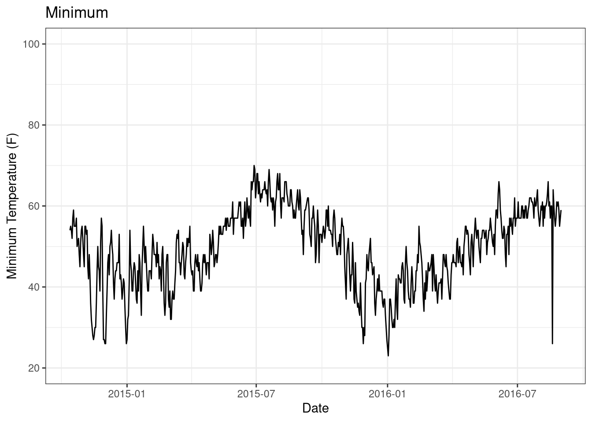
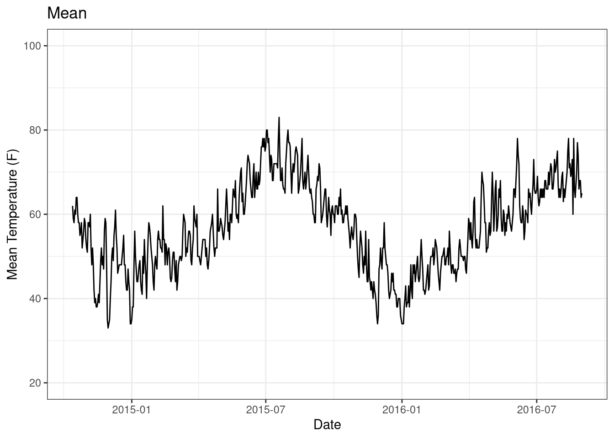
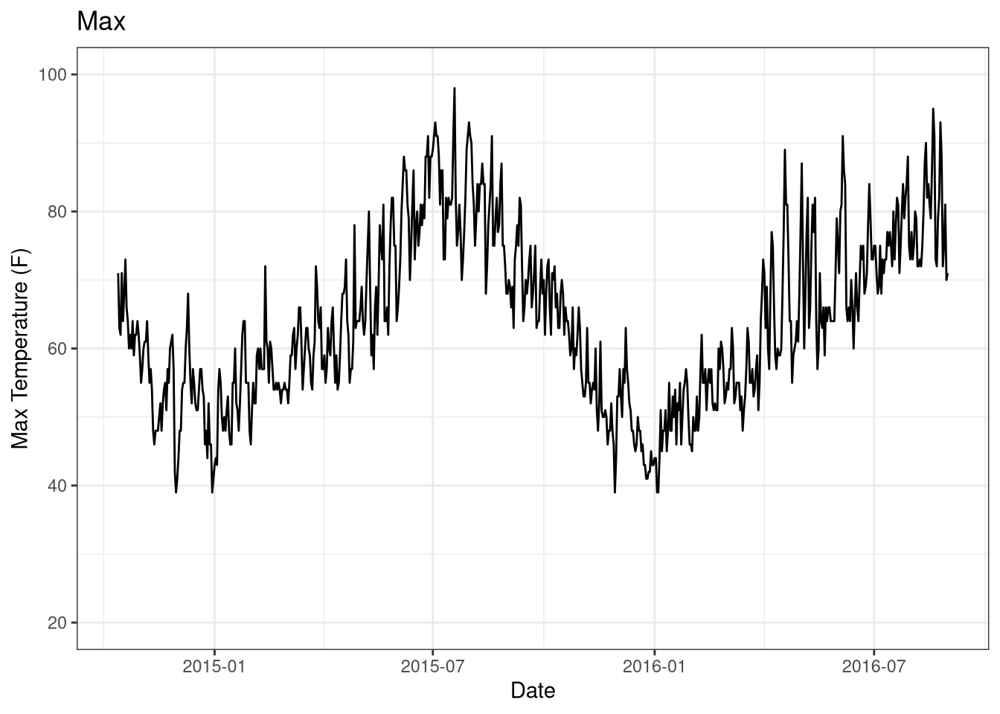
Events
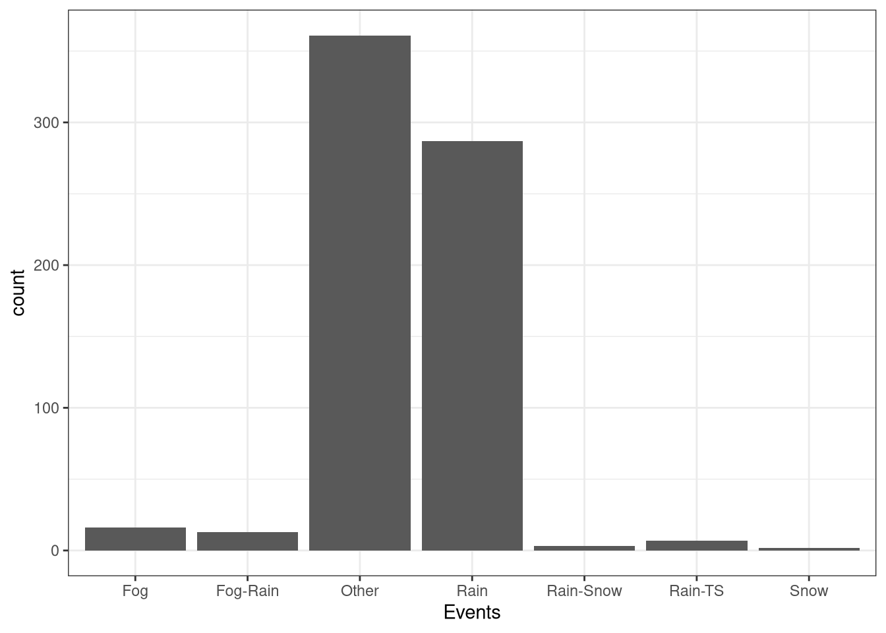
Rain and Other.Combining Weather and Trip Datasets
Good, so we can now see some parts of the weather data. Let’s combine the weather data with our trip data. Let’s try a left join from the dplyr package.
# Make a copy of the data frame
trip_3 <- trip_2
# Change column name in trip_3 to match weather dataset
trip_3$Date <- trip_3$start_date
# Left join the trip and weather dataframes by date.
trip_weather <- left_join(trip_3, weather, by = "Date")
# summary(trip_weather)Mean Temperature vs. Number of Trips
Ok. Now let’s see how the number of trips per day is influenced by weather (mean temperature, rounded to the nearest 5 degrees F).
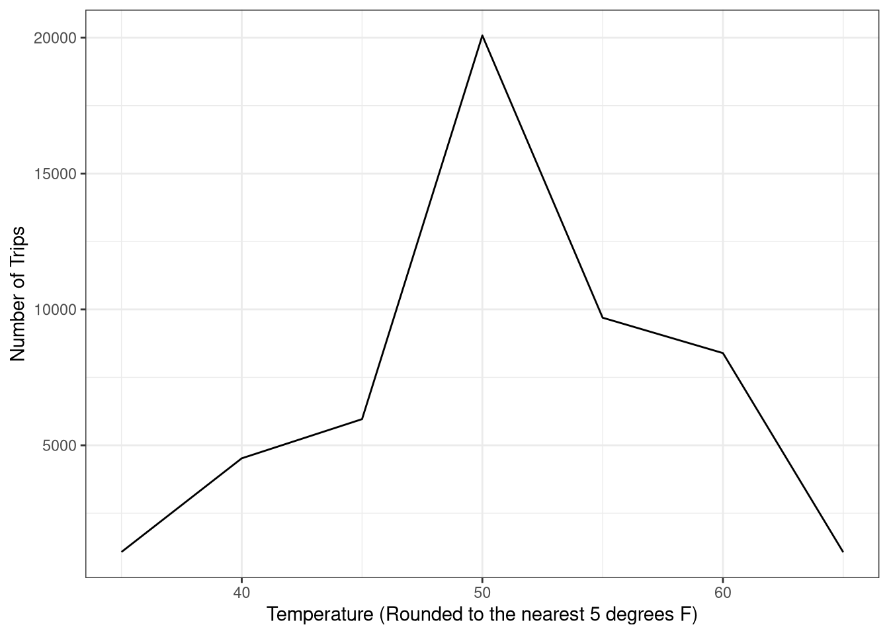
Interesting! There are more trips when the weather is 50 F. I would have thought that to be too cold to want to ride. However, this figure may be influenced by the overall number of days that exhibited each mean temperature. Let us standardize.
T1 <- trip_weather |>
mutate(RoundedTemp = round(Mean_Temperature_F/5)*5) |>
group_by(RoundedTemp) |>
summarize(n = n(), Days = n_distinct(Date)) |>
mutate(Ratio = n/Days)
T1# A tibble: 7 × 4
RoundedTemp n Days Ratio
<dbl> <int> <int> <dbl>
1 35 1074 7 153.
2 40 4522 19 238
3 45 5963 24 248.
4 50 20081 74 271.
5 55 9695 35 277
6 60 8393 26 323.
7 65 1065 2 532.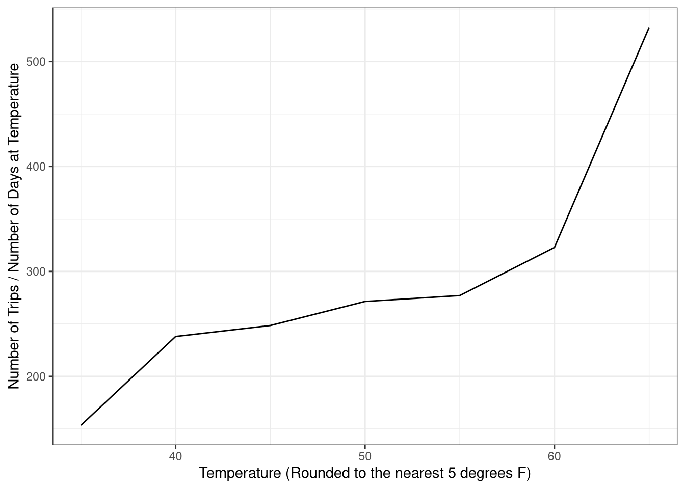
So when we standardize our measurements, correcting for the number of days that actually reached each temperature, we see a steady increase in the number of trips until around 65 F. People are more likely to ride a bike when it’s warm outside.
Precipitation vs. Number of Trips
If you’ve ever heard of Seattle, you probably hear that it rains all the time there. Let’s see if that has an impact on the number of trips taken in a day.
We’ll start with a figure standardized for number of days at a precipitation level, rounded to the nearest 0.2 inches.
T2 <- trip_weather |>
mutate(RoundedPrecip = round(Precipitation_In / 0.2)*0.2) |>
group_by(RoundedPrecip) |>
summarize(n = n(), Days = n_distinct(Date)) |>
mutate(Ratio = n/Days)
T2# A tibble: 7 × 4
RoundedPrecip n Days Ratio
<dbl> <int> <int> <dbl>
1 0 37773 129 293.
2 0.2 6558 27 243.
3 0.4 3777 15 252.
4 0.6 1393 7 199
5 0.8 1055 6 176.
6 1.4 203 2 102.
7 2.2 34 1 34 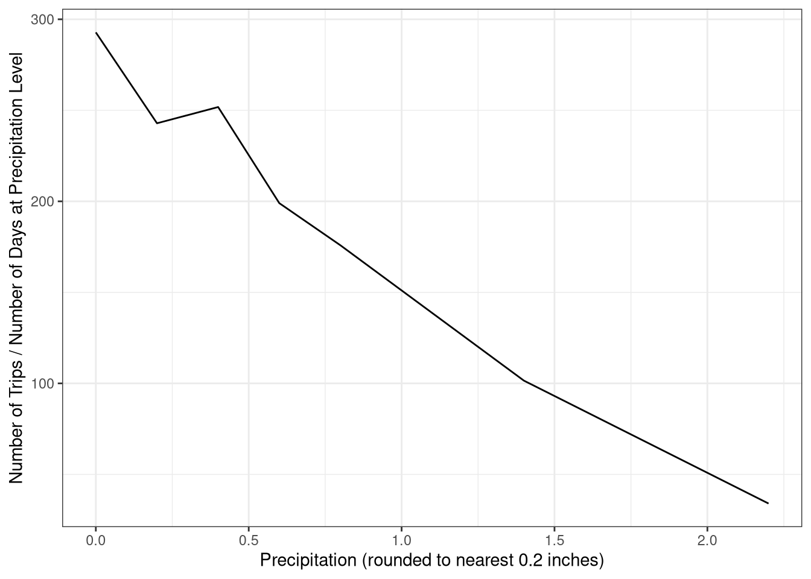
Looks like even Seattleites have a limit when it comes to riding a bike in the rain. The more it rained, the fewer trips were taken per day.